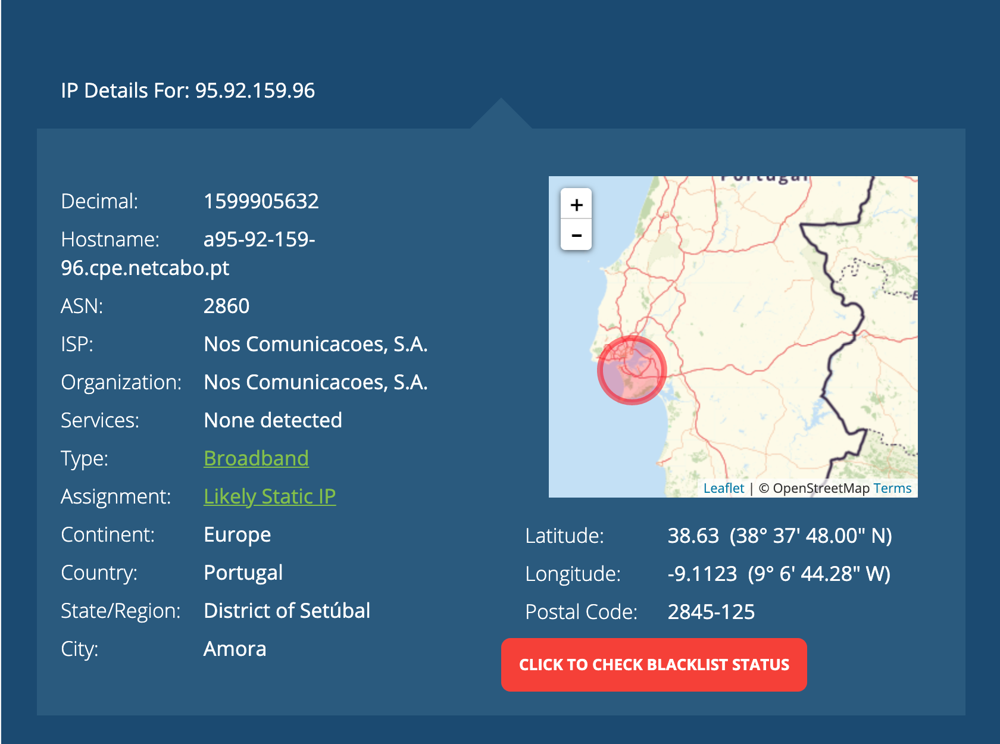
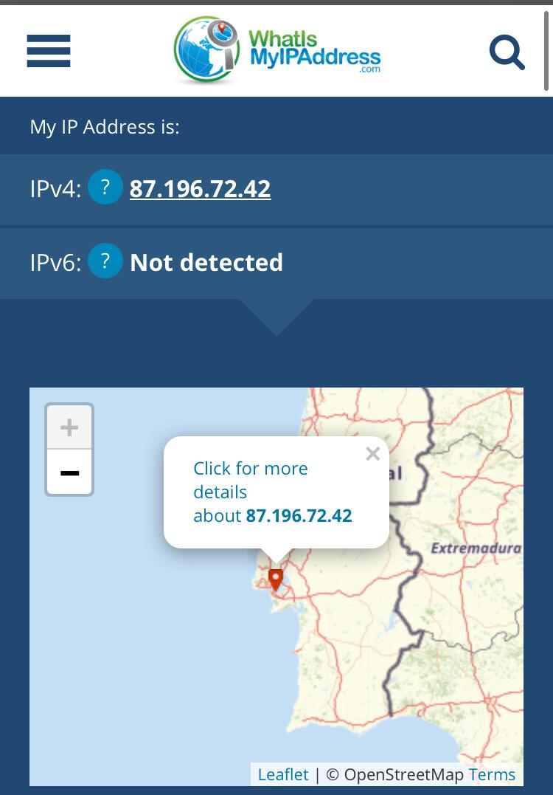

No ambito da Disciplina de Programação Web foi proposto aos alunos realizar esta primeira ficha prática1(laboratório1). Tinhamos 4 tópicos neste trabalho:
O meu IP do PC é: 95.92.159.96
Este IP está localizado na zona da Grande Lisboa,como é possivel observar na seguinte imagem:

O meu IP do meu telemovel é:87.196.72.42
Este IP do meu telemovel está localizado na zona da Grande Lisboa,como é possivel observar na seguinte imagem:
O endereço IP do servidor Web onde está alojada a sua página no Heroku é : 54.156.19.143
E encontra-se nos Estados Unidos Da América no estado de Virginia

O IP do nosso servidor Web do Heroku encontra-se localizado no Estados Unidos.Mas para este ir até lá faz um percurso até la chegar .O Percurso é:


Ao clicar na barra network aparece no lado inferior esquerdo dois ficheiros:
Neste caso foram dois ficheiros.
timing de espera do document:60.40 ms
timing de espera do png:60.69ms
content download do document:1,44ms
content download do png:14,27ms
Preview:Na parte do preview do documento observo todo o texto da página ou seja , é na parte do preview que visualizamos a pagina sem as tags html.
Já na preview da imagem observo a imagem em si, a imagem que foi colocada na pasta, e não o url da imagem
No Headers: tem todas as informaçoes a cerca do cabeçalho, ou seja,informaçoes mais técnica a cerca do tipo de servidor, da data da ultima atulização da página,o status code,ect...Tudo isto está divido em separadores:General,Response Headers,Request Headers,ect...
Timing: O timing dá-nos informação a cerca de todo o tempo de duração.Sobre o tempo que os ficheiros demoram a ser descarregaos, ao tempo de conexão e no final dá-nos o tempo total